Lesson 8: Functions and Their Graphs
Opening Story
Lesson 8 - Opening story
(1:02
mins, L8 Opening Story Transcript)
Introduction
In this lesson we are focusing on the third step of the Quantitative Reasoning Process: Apply Quantitative Tools. Last week we learned about functions. This week we will expand our knowledge of functions to see how they help solve some important questions from everyday life when used as a tool in the Quantitative Reasoning Process.

In the opening story of this lesson, Sophia and Emmy used carbon-14 dating to solve the mystery about which statue was real and which was fake. Carbon-14 dating is a method that uses exponential functions to determine the age of an object that contains organic material.
Although Sophia and Emmy’s story is a fictional bedtime story, similar uses of mathematical functions and the Quantitative Reasoning Process help solve many different types of problems encountered in every day life such as:
- How long will it take me to pay off this loan?
- How much money should I save each month if I want to buy a car?
- How much money should I save each month in order to retire at age 62?
- How many calories should I eat each day if I want to compete in a triathlon?
- Should I buy a car with better gas mileage?
- Should I accept a job offer that pays commission rather than a salary?
- Which health insurance plan is best for my situation?
- How much money do I need to start a community charity?
In fact, real life methods similar to those depicted in Sophia and Emmy’s story are currently used to fight the poaching of elephants in Asia and Africa. The Poachers kill elephants for the ivory in their tusks. These poaching deaths have led to declining elephant populations over the past century. In an effort to protect elephants, international agreements banned the trade of raw ivory from Asia and Africa in the 1970s and 1980s. However, 30,000 elephants are still killed every year by poachers who illegally take their tusks. Detecting poached ivory had previously been too expensive and time consuming for governments to enforce these trade laws.
Recently researchers at the University of Utah developed methods to use carbon-14 dating to determine the age of ivory. The new method is less expensive than previous methods so it is more accessible to government agencies. The carbon-14 dating method is used to determine if the sample of ivory is old and comes from an elephant killed before the ivory trade ban, or if the ivory is recent and comes from a poached elephant. Governments can now identify illegally sourced ivory and fight poaching of elephants, all because of the wise use of mathematical functions and the Quantitative Reasoning Process. 1
The Coordinate Plane
When we use functions it is helpful to create a graph of the function. Functions are graphed on the coordinate plane. The horizontal axis (also called the \(x\)-axis) represents the inputs of a function and the vertical axis (also called the \(y\)-axis) represents the outputs of the function.
Every point on the graph represents an input and output of the function. We represent each point as an ordered pair, \((x,y)\), where the first number is the input and the second number is the output. The point \((0,0)\) is referred to as the origin.
When we graph a function, the graph is a visual representation of all the inputs and corresponding outputs of the function. For example, the following graph represents the function \(f(x)=x^2\).
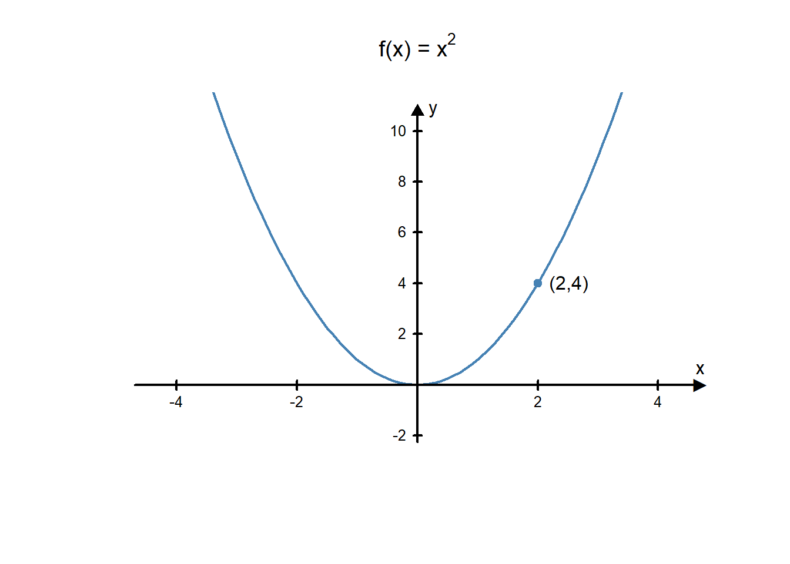
Every point on the curve represents an input and an output of the function. Notice that the point \((2,4)\) is a point on the curve. That is because if you use 2 as an input in the function \(f(x)=x^2\) then you get an output of 4. In other words, \(f(2)=4\). Some of the other ordered pairs related to this function are: \((-1,1), (3,9), (-2,4),\) and \((0,0)\). Notice that if you use the first number in each pair as an input of the function \(f(x)=x^2\) then you get the second number as the output.
Three Types of Functions
Functions can be divided into families of functions. Each family represents a group of functions with similar properties. We will focus on three common families of functions: linear functions, quadratic functions, and exponential functions. There are many more families of functions, but these three function families are very helpful for solving everyday problems and making informed decisions.
Linear Functions
Linear functions help us describe or mathematically model real world situations where something is changing at a constant rate.
A linear function is a function of the form \(f(x)=mx+b\) where \(m\) and \(b\) are constants.
Two features that help us graph a linear function are the slope and the y-intercept. The equation \(f(x)=mx+b\) is said to be in slope-intercept form.
The \(y\)-intercept is the point on the graph where the line crosses the vertical axis (\(y\)-axis).
The slope of a line is a number that tells us how steep the line is. If the slope is \(\frac{2}{3}\), starting from any point on the line, we go up 2 units for every 3 units we go to the right. If the slope is \(-4\), we would start at any point on the line and then go down 4 units for each 1 unit we go to the right.
The graph of a linear function, \(f(x)=mx+b\) is a straight line that crosses the \(y\)-axis at the point \((0,b)\) and has a slope of \(m\).
Moving the sliders in the example below will show how changing the slope and the \(y\)-intercept changes the graph of the line.
L08 - Interactive 1: Linear Functions
(L08-1
ADA Interactive Transcript)
Example 7
Determine which of the following are linear functions:
a. \(f(x)=3x-2\)
b. \(3x+4y=-7\)
c. \(y=4x^2-\sqrt{3}\)
Solution
Part a.
The function \(f(x)=3x-2\) is a linear function because its form matches the general form of a linear function: \(f(x)=mx+b\). In this example, \(m=3\) and \(b=-2\). We could graph this function by using the fact that it will cross the \(y\)-axis at the point \((0,-2)\) and has a slope of \(3\).
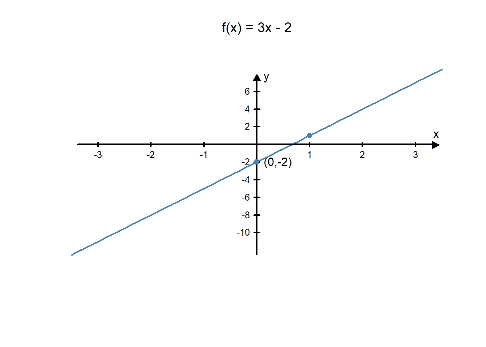Part b.
The function \(3x+4y=-7\) is also a linear function. It is not currently in the form \(f(x)=mx+b\), but we could rewrite it in this form using some algebra rules. First, we solve the equation for \(y\):
\[ \begin{align} 3x+4y&=-7\\ 4y&=-3x-7\\ y&=\frac{-3x-7}{4}\\ y&=\frac{-3}{4}x-\frac{7}{4}.\\ \end{align} \]
Recall from last week’s lesson that \(y=f(x)\), so we can change the \(y\) to an \(f(x)\). This makes the equation: \[f(x)=\frac{-3}{4}x-\frac{7}{4}.\]
Now this function is written in the slope-intercept form of a linear function. We could graph it using a \(y\)-intercept of \(\frac{-7}{4}\) and a slope of \(\frac{-3}{4}\).
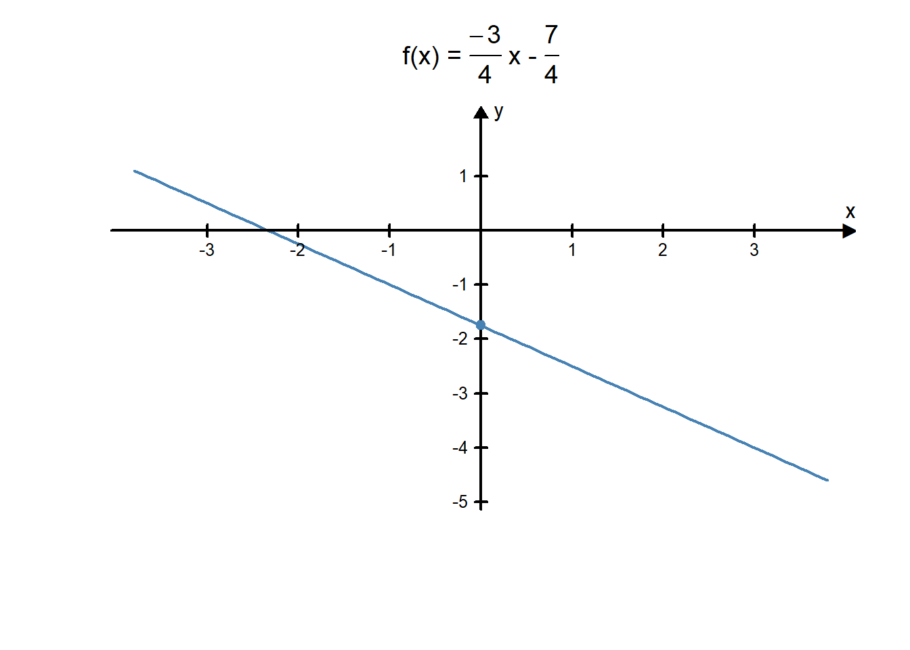Part c.
The equation \(y=4x^2-\sqrt{3}\) is not a linear function. Notice that in a linear function the \(x\) variable is not squared. Because equation c. has an \(x^2\) term, we know it is not a linear function.Example 8 - Graphing Linear Functions
Example 8A
Graph the linear function \(f(x)=\frac{4}{5}x-3\).
Solution The equation of this linear function is written in slope-intercept form, so we know the y-intercept is \((0,-3)\) and the slope is \(\frac{4}{5}\). We can use this information to help us graph the function:
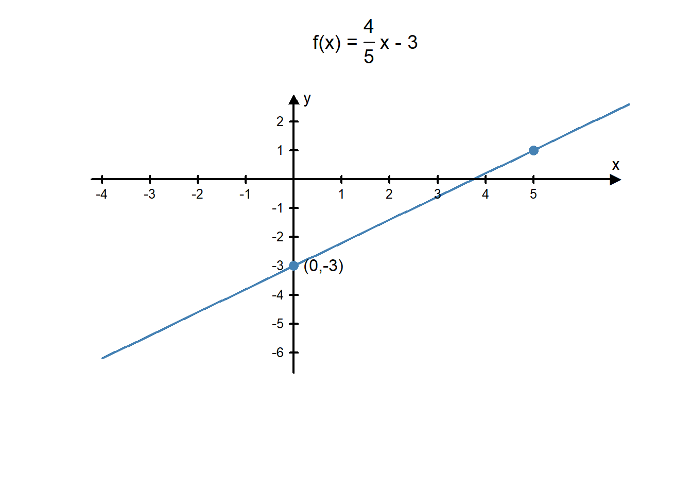
Example 8B
Graph the linear function \(12x-3y=9\).
Answer: First, we need to rewrite this equation in the slope-intercept form for a linear function. We start by solving for \(y\).
\[ \begin{align} 12x-3y&=9\\ -3y&=-12x+9\\ y&=\frac{-12x+9}{-3}\\ y&=\frac{-12}{-3}x+\frac{9}{-3}\\ y&=4x-3\\ f(x)&=4x-3\\ \end{align} \]
We now know that we can graph this linear function by drawing a line that goes through the point \((0,-3)\) with a slope of \(m=4\).
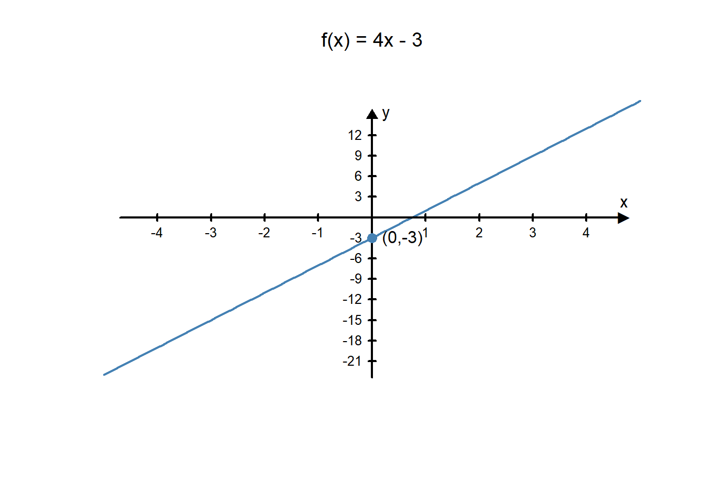
A Linear Application - Calories per Day
A calorie is a unit of measurement that we use to measure energy. Sarah is a 22-year-old woman with an average weight and height but who does very little physical activity. Nevertheless, in a given day, she spends about 1860 calories of energy.2 This means if Sarah eats more than 1860 calories in a day, her body will store the extra calories and she will gain weight. If she eats less than 1860 calories in a day, her body will need to use some of the stored calories to make up the difference and she will lose weight.
Sarah is trying to improve her health and realizes that by exercising, she can increase her caloric expenditure. Sarah decides to start walking each morning before she goes to work. She has determined that for her weight and the speed (15 minutes per mile), she will burn about 6 calories for each minute she walks3.
Her schedule varies every day so she can’t always walk for the same amount of time. However, Sarah realizes that she can create a linear function that will give her the total amount of calories she can consume that is based on the number of minutes she walks. This will allow her to better monitor her caloric expenditure and meet her health goals.
The number of calories she spends on a day she doesn’t go for a walk, 1860 calories, will be the \(y\)-intercept of the linear function. The slope of the function will be the number of calories burned per minute, or 6 calories per minute. This gives her the following linear function:
\[ f(x)=6 x+1860 \] Sarah makes the following chart to determine how many total calories she would need each day, depending on how long her walk is:
| \(x\) = Length of Walk | \(f(x)\) = Total calories |
|---|---|
| 5 minutes | 1890 calories |
| 10 minutes | 1920 calories |
| 15 minutes | 1950 calories |
| 20 minutes | 1980 calories |
| 25 minutes | 2010 calories |
| 30 minutes | 2040 calories |
| 35 minutes | 2070 calories |
| 40 minutes | 2100 calories |
| 45 minutes | 2130 calories |
| 50 minutes | 2160 calories |
| 55 minutes | 2190 calories |
| 60 minutes | 2220 calories |
On a day when Sarah walked 30 minutes prior to work, she used the following graph to help her see how the walk effected the total number of calories she would burn that day. Based on this graph, she knows that her caloric expenditure is 2040 calories.
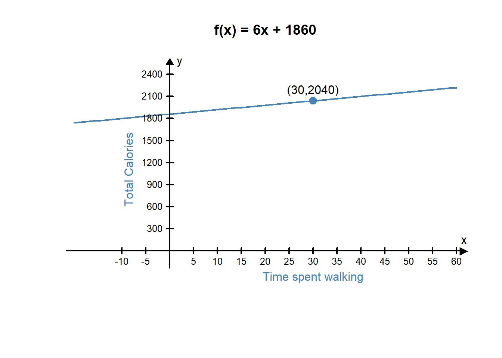
Quadratic Functions
Another commonly used type of graph represents a quadratic function.
A quadratic function is a function in the form \(f(x)=ax^2+bx+c\) where \(a, b\), and \(c\) are constants.
The graph of a quadratic function is always a \(u\)-shaped curve called a parabola. Three features that help us graph a quadratic function are the \(y\)-intercept, the direction the parabola opens, and the vertex of the parabola.
The y-intercept is the point on the graph where the parabola crosses the vertical axis (\(y\)-axis).
The direction of the parabola refers to whether the u-shape of the parabola opens up or opens down.
The vertex of the parabola is either the highest or the lowest point on the parabola (depending on the direction of the parabola).
The graph of a quadratic function is a parabola. The vertex of the parabola has an \(x\)-coordinate of \(x=\frac{-b}{2a}\). You find the \(y\)-coordinate of the vertex by finding \(f\big(\frac{-b}{2a}\big)\). The y-intercept is at \((0,c)\). If \(a\) is positive, the parabola opens up. If \(a\) is negative, the parabola opens down.
Example 9
Determine which of the following equations are quadratic functions.
- \(f(x)=-4x^2+2x-3\)
- \(f(x)=\frac{-3}{x^2}\)
- \(x^2-2y=3x\)
Answer:
Both equations a. and c. are quadratic functions.
Notice that equation a. is already written in the form \(f(x)=ax^2+bx+c\). In this case \(a=-4\), \(b=2\), and \(c=-3\).
In equation c. the function is not written in standard form, but it can be rewritten as \(f(x)=\frac{1}{2}x^2-\frac{3}{2}x+0\).
Equation b. is not a quadratic function because the \(x^2\) term is in the denominator of a fraction so it cannot be written in the form \(f(x)=ax^2+bx+c\).Example 10
Sketch the graph of \(f(x)=2x^2-4x+1\).
Solution
First, we find the vertex of the parabola. We know it is at the point where \(x=\frac{-b}{2a}\). So in this function the vertex will be at \[x=\frac{-b}{2a}=\frac{-(-4)}{2\times2}=\frac{4}{4}=1.\] Since we know the \(x\) value of the vertex will be at \(x=1\), we can find \(f(1)\) to find the \(y\)-value of the vertex. \[f(1)=2(1^2)-4(1)+1=2-4+1=-1.\] So we know the \(y\)-value of the vertex is \(y=-1\). Therefore, the vertex of this parabola is \((1,-1)\).
Next, we find where the parabola crosses the \(y\)-axis. We know this happens at the point \((0,c)\), so in this example the parabola will cross the \(y\)-axis at the point \((0,1)\).
Finally, we determine whether the parabola opens up or down. In this parabola, \(a=2\). Because \(a>0\) we know the parabola opens up.
Putting all this information together gives us the following graph:
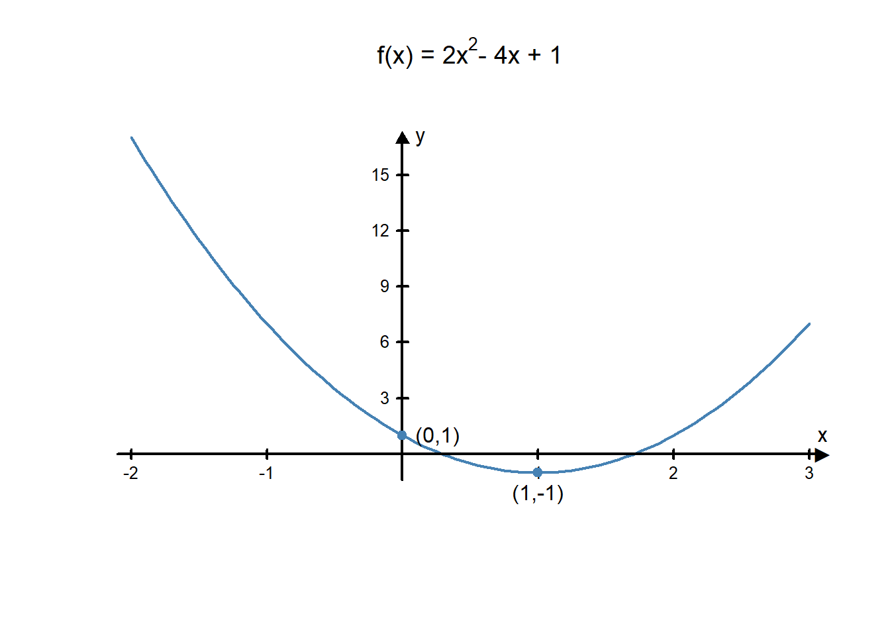
A Quadratic Application - Exploding Fireworks
One famous application of quadratic functions was discovered by the Italian mathematician and physicist Galileo Galilei.
In the 16th century, Galileo developed the following equation to show the path of a free-falling object:
\[ f(x)=-16x^2+v_0 x+h \] where \(x\) represents time, \(v_0\) represents the initial velocity of the object, and \(h\) represents the initial height of the object (in feet). The input of the function represents how long the object has been in the air and the output of the function is the height of the object above the ground.
Andre is designing a fireworks show. He knows that he will fire a rocket from a location 2 feet above the ground and it will have an initial velocity of 203 ft/sec.
Andre needs to know how long to make the fuse of the rocket. For safety reasons, he needs to make sure the firework will be more than 500 feet above the ground when it explodes. He wants to have the firework explode when reaches its highest point.
Using Galileo’s free-fall equation, Andre finds this equation for his rocket:
\[f(x)=-16x^2+203x+2\]
Because of the negative in the equation, he knows the parabola opens down, so the highest point will be at the vertex of the parabola. He finds the vertex of the parabola: \[x=\frac{-b}{2a}=\frac{-203}{2\cdot -16}=6.34\] \[f(6.34)=-16(6.34)^2+203(6.34)+2=645.89\] Since the vertex of the parabola is \((6.34, 645.89)\), Andre knows the rocket will be 645.89 feet above the ground 6.34 seconds after he fires the rocket. So, he needs to use a fuse that will burn for 6.34 seconds.
Andre’s graph verifies his solution:
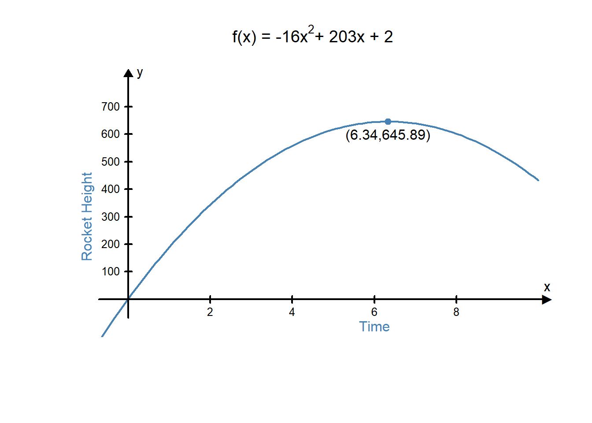
Exponential Functions
Exponential functions are used in many real world applications such as computing compound interest in bank accounts and modeling the growth of populations.
An Exponential Function is a function in the form \(f(x)=a\cdot b^x+c\) where \(a, b\), and \(c\) are constants and \(b>0\) and \(b\neq 1\).
There are three features that help graph exponential functions:
- The y-intercept is the point where the graph crosses the vertical axis (\(y\)-axis).
- The horizontal asymptote is a line that the function gets closer and closer to, but never crosses.
- The graph can be either increasing or decreasing. An increasing graph goes up as you move along the graph from left to right. A decreasing graph goes down as you move along the graph from left to right.
The graph of an exponential function has a \(y\)-intercept at \((0,a+c)\). Plotting another point on the graph helps determine the steepness of the graph. The graph has a horizontal asymptote at \(y=c\). When \(0<b<1\) the graph is decreasing when \(b>1\) it is increasing.
Example 11
Classify each of the following functions as being linear, quadratic, or exponential.
- \(f(x)=3\cdot2^x+4\)
- \(f(x)=4-3x\)
- \(f(x)=3x^2-4x+2\)
Solution
- This function is exponential. We know because the variable \(x\) is in the exponent.
- This function is linear. We know because it is in the form \(f(x)=mx+b\) where \(m=-3\) and \(b=4\).
- This function is quadratic. We know because it is in the form \(f(x)=ax^2+bx+c\) where \(a=3\), \(b=-4\), and \(c=2\).
Example 12 - Graphing Exponential Functions
Example 12A
Graph the function \(f(x)=3\cdot5^x+2\).
Solution
This is an exponential function of the form \(f(x)=a\cdot b^x+c\) where \(a=3\), \(b=5\), and \(c=2\).
- The \(y\)=intercept is at \((0,a+c)=(0,3+2)=(0,5)\).
- When \(x=1\), \(f(1)=3\cdot5+2=17\). The graph goes through the point \((1,17)\).
- The horizontal asymptote is at \(y=2\).
- Since \(b=5\) is greater than 1, we know the function is increasing.
This information tells us the graph looks like this:
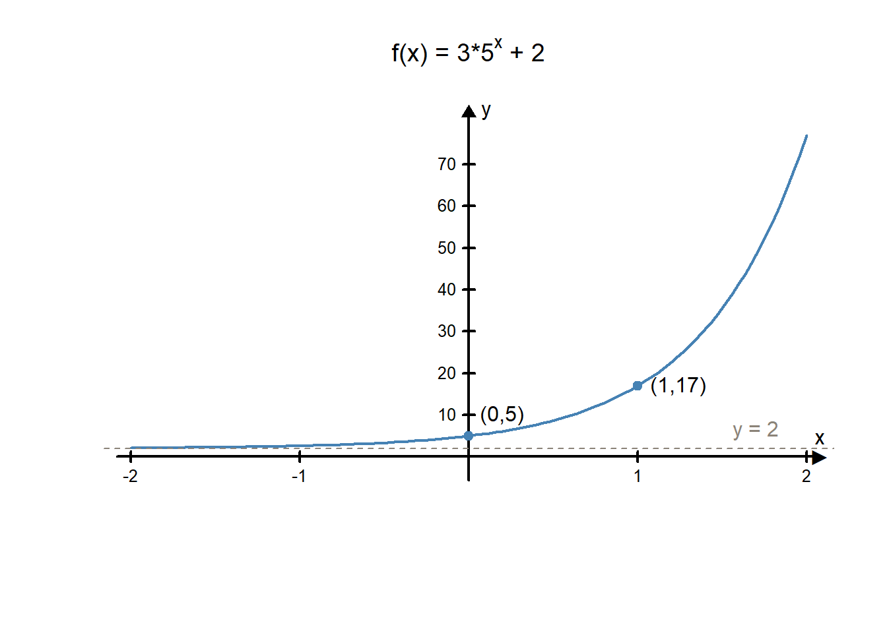Example 12B
Graph the function \(f(x)=7(1/2)^x+1\).
Answer:
This is an exponential function of the form \(f(x)=a(b^x)+c\) where \(a=7\), \(b=1/2\), and \(c=1\).
- The \(y\)=intercept is at \((0,a+c)=(0,7+1)=(0,8)\).
- When \(x=1\), \(f(1)=7(1/2)+1=\frac{9}{2}=4.5\). The graph goes through the point \((1,4.5)\).
- The horizontal asymptote is at \(y=1\).
- Since \(b=1/2\) is between 0 and 1, we know the function is decreasing.
This information tells us the graph looks like this:
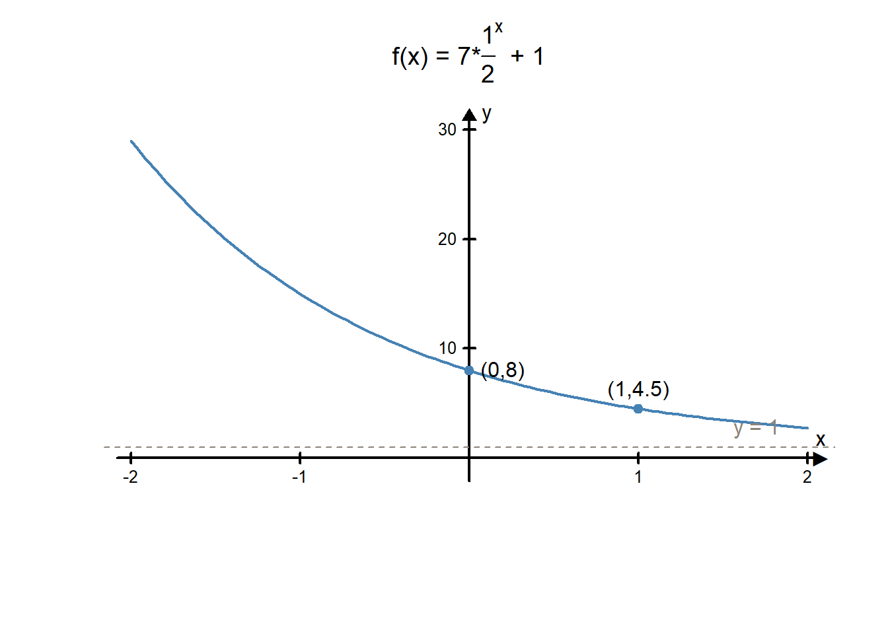Graphing Practice
L08 - Interactive 3: Graphing Practice
(L08-3
ADA Interactive Transcript)
L08 - Interactive 4: Graphing Practice Continued
(L08-4
ADA Interactive Transcript)
An Exponential Application - Carbon-14 Dating
In the introduction we learned that carbon-14 dating is used to determine the age of organic materials. This is a good example of an application involving exponential functions.
Carbon-14 dating works by comparing the ratio of carbon-14 to carbon-12 in the organic material. Carbon-12 is a stable form of carbon that does not decay over time. Carbon-14, on the other hand, is radioactive, and is therefore an unstable form of carbon. Living things have a consistent ratio of carbon-12 to carbon-14. However, when an organism dies, it stops replenishing carbon-14 into its chemical makeup. Without new carbon-14 sources being introduced into the organism, the carbon-14 will decay over time into elements other than carbon. The will cause the carbon-12 to carbon-14 ratio to change with time. By looking at the current carbon-12 to carbon-14 ratio of the dead organism and comparing ti to a carbon-12 to carbon-14 ratio in a living organism, scientists can use this difference to calculate how long an organism has been dead.
This is what is used to determine the age of ivory. While the tusk is still intact on a living elephant, the ratio of carbon-12 and carbon-14 will stay consistent. But when the tusk is removed from the elephant, the amount of carbon-14 begins to change.
The half-life of carbon-14 is about 5,730 years. This means that half of the carbon-14 decays away every 5,730 years. Knowing this, scientists can create the following exponential equation to describe the amount of carbon-14 that is present over time.
\[f(x)=A\bigg(\frac{1}{2}\bigg)^{x/5730}\]
In this equation \(A\) represents the amount of carbon-14 initially present in the living organism. The input for this function is time (in years) since the organism died and the output is the current amount of carbon-14 present in the organic material.
If a particular ivory tusk from an elephant had 0.35 grams of carbon-14 present when the elephant was living, the equation will become:
\[f(x)=0.35\bigg(\frac{1}{2}\bigg)^{x/5730}\]
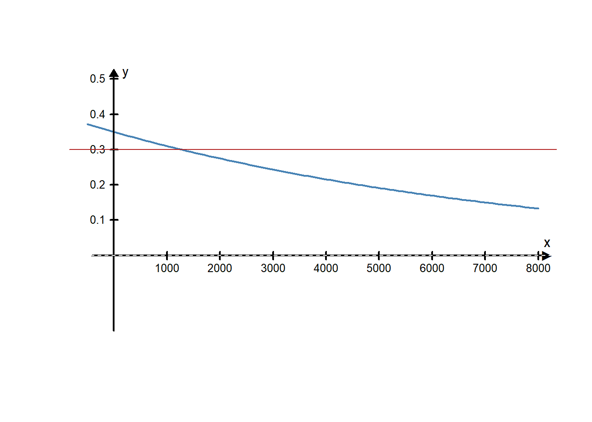
If researchers test a piece of ivory and find there are currently 0.30 grams of carbon-14 present, how old would this piece of ivory be? Looking at the graph, the red line shows that the \(y\)-value will be 0.3 after a little more than 1000 years. So this piece of ivory is over 1000 years old.
At the beginning of the lesson, we mentioned new techniques for carbon-14 dating developed by researchers at the University of Utah. Because carbon-14 has such a long half-life, it isn’t very helpful at determining the age of organic materials that are less than about 50,000 years old. New methods developed by the University of Utah researchers are particularly helpful in fighting poaching because they found a way to make carbon-14 dating work for specimens that are only 30-50 years old.
Check Your Understanding
L08 - Interactive 5: Check Your Understanding
(L08-5
ADA Interactive Transcript)
Lesson Checklist
By the end of this lesson, you should be able to:
- correctly apply the order of operations
- correctly use the rules of exponents
- use function notation to evaluate a function (linear, quadratic, exponential) at a point
- Distinguish among linear, exponential, and quadratic graphs
- identify graphs of linear, quadratic, and exponential functions from their equations
- interpret functional values or graphs in context of a given situation.
Age and legality of ivory revealed by Carbon-14 dating can fight poachers; July 1, 2013; Phys.org↩︎
https://www.verywell.com/walking-calories-burned-per-minute-3887138↩︎
Social Media Marketing Example
Viktor is running a small business and wants to improve his marketing. He decides to use the Quantitative Reasoning Process to make some decisions about the type of marketing he wants to do.
Understand the Problem
Viktor’s business is an online tractor sales business. Viktor does not have a store and runs the business out of his home. Most of his business is done through his website and over his phone. He believes his sales will increase if more people see his website. He decides to use Facebook, Twitter, and Instagram to market his business. He wants these social media tools to drive traffic to his website.
Identify Variables & Assumptions
Viktor finds a marketing company willing to run a social media marketing campaign for his business for a fixed monthly fee. The company offers three levels of service with different costs. As he thinks about his situation, Viktor identifies the following variables:
He makes the following assumptions:
Apply Quantitative Tools
Analytics for his website show that he currently gets around 75 unique visitors to his website per month. He hopes to double the number of visits per month to 150 unique visitors per month.
Because the marketing plans claim to increase traffic to his website by a fixed percentage every month, Douglas recognizes the number of visits can be described with an exponential function. He creates the following three exponential functions:
\[\text{Plan A: } f(x)=75 (1.05)^x\\ \text{Plan B: } f(x)=75 (1.035)^x\\ \text{Plan C: } f(x)=75 (1.02)^x\]
In these equations, the input \(x\) represents the number of months the social media marketing campaign has been running. The output \(f(x)\) represents the number of visitors to the website that month.
Viktor created the following graph with the three exponential functions on the same graph to compare the three plans.
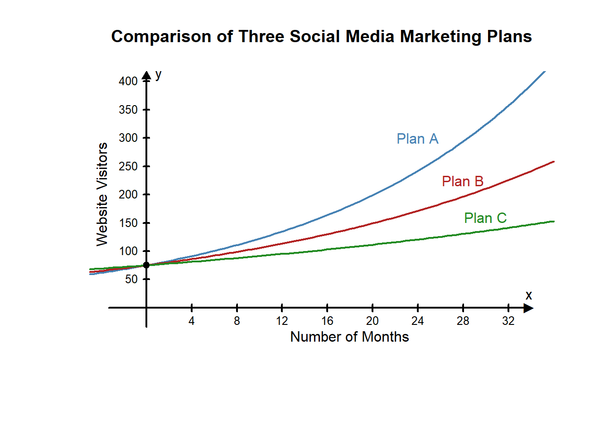
Because he is trying to get to 150 website visitors per month, he decides to draw a line on the graph at \(y=150\) so he can see how long it will take to reach 150 website visitors with each plan.
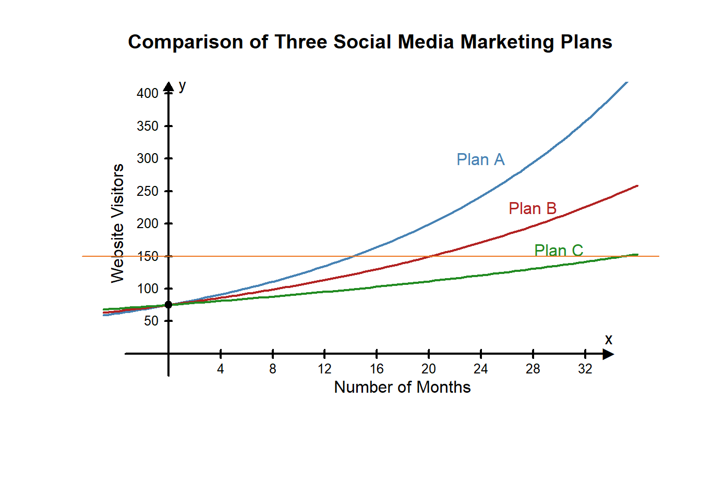
Looking at the graph, he finds where the line intersects each curve. The \(x\)-value at the intersection point will represent the number of months required double the traffic to his website:
He realizes that Plan A is the fastest, Plan B takes about 6 months longer than Plan A, and Plan C takes about 15 months longer than Plan B.
Make an Informed Decision
Using the results of his computations, Viktor compares the cost of each plan to the length of time required to double the traffic to his website (see chart above). He finds that Plan A is quite a bit more expensive than Plan B, but Plan B doesn’t take that much longer to double the traffic to his website. Although Plan C is the cheapest, it takes much more time to get the result he wants.
Viktor selects Plan B.
Evaluate Your Reasoning
After using the marketing company for 6 months, Viktor decides to reevaluate his assumptions. He reviews his website traffic over the 6 months to see how things are going. According to the claims of the Social Media Marketing Company, he should have seen approximately a 3.5% increase of traffic to his website each month. He decides to compare the actual number of visits to his website to the predicted number of visits from the exponential function he used to make his decision. In the table below, the second column shows the predicted website visitors if the marketing plan worked as expected. The third column shows the actual number of visitors to the website.
He notices that there was a dip in Month 4 with fewer visitors than expected. He was not concerned because Month 4 was December, which is usually the slowest month for his business and he found the number of visitors was back up to the expected amount by Month 6. He determines the Social Media Marketing is working as expected.
Now that he knows more customers are visiting his website, he decides to examine the accuracy of his assumption that more website visitors will increase tractor sales. He compares his current sales to sales for the same months the previous year and finds on average his sales have increased by 4% since hiring the social media marketing company. Viktor is pleased with the results of his decision using the Quantitative Reasoning Process and plans to keep using the company.